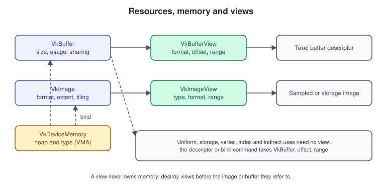
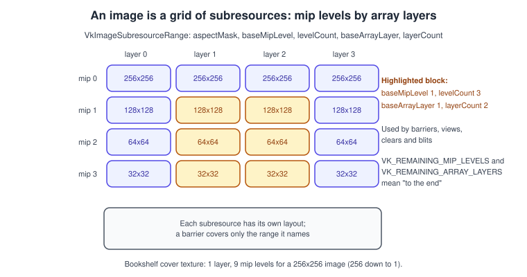
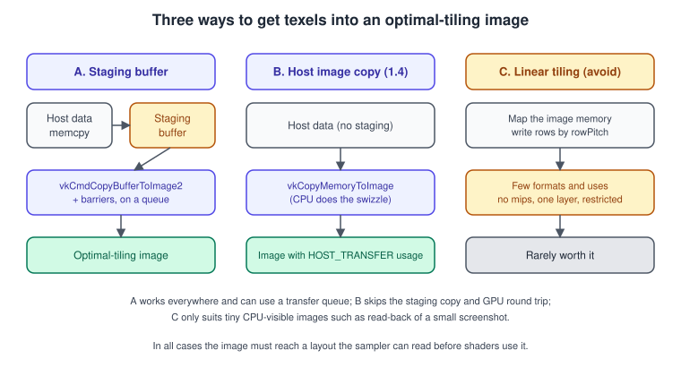

Buffers, Images and Views
|
This content was generated with the assistance of AI and should be verified against the official documentation before being relied on in production. |
In Vulkan a buffer or an image is only a description: a size or an extent, a format, a set of intended uses. It owns no memory until you bind some, and a shader never sees it directly; shaders see descriptors that point at buffers and at image views. Getting these objects right (the usage bits, the tiling, the subresource ranges, the copies that fill them) is most of what separates a first triangle from a renderer that loads textures and meshes. This page covers the objects themselves. Where the memory comes from is the subject of Memory: Heaps, Types and VMA, and how shaders reach the resources is in Descriptors and Push Constants.
The facts were checked in November 2026. The version documented is Vulkan 1.4 (headers 1.4.3xx, LunarG SDK 1.4.363.0), with Vulkan 1.3 as the minimum for the running example: vkCmdCopyBuffer2 and the other 2 copy commands are core in 1.3, while host image copy, VkBufferUsageFlags2CreateInfo and vkCmdBindIndexBuffer2 became core in 1.4 and are optional extras for the example. Everything here is portable across Windows, Linux, Android and, through MoltenVK or KosmicKrisp, macOS (see Vulkan on Apple).
This is the resource layer of the Vulkan Bookshelf (C++20, Vulkan-Hpp, VMA, GLFW or SDL3, Slang shaders): the book vertex buffer, the cover texture and its view are created here, and the next stages use them (see Bookshelf 01: From Triangle to Textured Book). The same ideas in other APIs are in OpenGL buffers and OpenGL textures; the general background is in Meshes and Vertex Data and Textures, Sampling and Mipmaps.
The resource model

Every Vulkan resource goes through the same life cycle:
-
Create the object with
vkCreateBufferorvkCreateImage. The create info states what you intend to do with it; nothing is allocated yet. -
Query the requirements with
vkGetBufferMemoryRequirements2orvkGetImageMemoryRequirements2: size, alignment and the memory types that can back it. The2variants can chainVkMemoryDedicatedRequirements, which says whether the driver prefers a dedicated allocation. -
Allocate and bind memory (
vkBindBufferMemory2,vkBindImageMemory2). In practice a library such as VMA does steps 2 and 3 for you (vmaCreateBuffer,vmaCreateImage). -
Create views where needed. A buffer needs a view only for texel buffers; an image needs a view for every use as a sampled image, storage image or attachment.
-
Use it in commands and descriptors, and destroy it only after every submitted command that references it has finished.
| Object | Describes | Needs a view? |
|---|---|---|
|
A linear range of bytes with a size and a set of usages. |
Only as a |
|
A one-, two- or three-dimensional array of texels with a format, mip levels, array layers and sample count. |
Yes, a |
|
A format applied to a range of a buffer, so a shader can read it like a one-dimensional texture. |
It is the view. |
|
A format, a view type and a subresource range applied to an image. |
It is the view. |
Buffers
Creating a buffer
VkBufferCreateInfo has few fields, and each one matters:
| Field | Meaning | Notes |
|---|---|---|
|
Size in bytes. Must be greater than zero. |
There is no padding to add yourself; alignment is handled when memory is bound. Offsets inside the buffer have their own alignment rules (see the limits table below). |
|
A bit mask of intended uses. |
Must be non-zero unless a |
|
|
Exclusive means one queue family owns the buffer at a time; moving it requires an ownership transfer (see Synchronization and sync2). Concurrent lets the families listed in |
|
Optional: |
The sparse flags need device features and the residency and aliased flags require the binding flag as well. The capture-replay flag is for tools such as GFXReconstruct. |
The usage bits you will use most:
| Usage bit | Used for |
|---|---|
|
Source or destination of copy and fill commands. A staging buffer is a transfer source, a device-local vertex buffer filled from it is a transfer destination as well as a vertex buffer. |
|
Bound with |
|
Read-only constant data through a uniform buffer descriptor. |
|
Read-write (or large read-only) data through a storage buffer descriptor. |
|
Required to create a |
|
Draw and dispatch parameters read by indirect commands. |
|
Lets you call |
The limits that govern offsets and copies, all in VkPhysicalDeviceLimits (see Physical and Logical Devices):
| Limit | What it constrains |
|---|---|
|
The offset of a uniform buffer descriptor or dynamic offset. A common value is 64 or 256; always read it, never assume it. |
|
The same for storage buffers. |
|
Offsets of texel buffer views. |
|
Granularity of |
|
The offsets and row pitches that make buffer-to-image copies fastest. These are hints, not requirements. |
A device-local buffer filled through staging
The most common buffer in a Vulkan program is a device-local vertex or index buffer that the CPU fills once. The example creates it with VMA (the allocation strategy is explained in Memory: Heaps, Types and VMA), writes the data into a host-visible staging buffer and records a vkCmdCopyBuffer2 followed by a synchronization2 barrier.
#include <vk_mem_alloc.h>
#include <vulkan/vulkan.h>
#include <cstring>
#include <vector>
#include <span>
#include <stdexcept>
struct Buffer {
VkBuffer buffer{};
VmaAllocation allocation{};
VkDeviceSize size{};
void* mapped{}; // only set for host-visible, persistently mapped buffers
};
Buffer createBuffer(VmaAllocator vma, VkDeviceSize size, VkBufferUsageFlags usage,
VmaAllocationCreateFlags flags, VmaMemoryUsage memoryUsage)
{
const VkBufferCreateInfo bufferInfo{
.sType = VK_STRUCTURE_TYPE_BUFFER_CREATE_INFO,
.size = size,
.usage = usage,
.sharingMode = VK_SHARING_MODE_EXCLUSIVE,
};
const VmaAllocationCreateInfo allocInfo{
.flags = flags,
.usage = memoryUsage, // VMA_MEMORY_USAGE_AUTO*: VMA picks the memory type
};
Buffer result{.size = size};
VmaAllocationInfo info{};
if (vmaCreateBuffer(vma, &bufferInfo, &allocInfo, &result.buffer, &result.allocation, &info) != VK_SUCCESS) {
throw std::runtime_error("vmaCreateBuffer failed");
}
result.mapped = info.pMappedData;
return result;
}
// Records "copy staging to a new device-local buffer" into cmd. The caller submits cmd,
// waits for it, and only then destroys the staging buffer.
Buffer uploadDeviceLocal(VmaAllocator vma, VkCommandBuffer cmd, std::span<const std::byte> data,
VkBufferUsageFlags finalUsage, Buffer& stagingOut)
{
stagingOut = createBuffer(vma, data.size(), VK_BUFFER_USAGE_TRANSFER_SRC_BIT,
VMA_ALLOCATION_CREATE_HOST_ACCESS_SEQUENTIAL_WRITE_BIT |
VMA_ALLOCATION_CREATE_MAPPED_BIT,
VMA_MEMORY_USAGE_AUTO);
std::memcpy(stagingOut.mapped, data.data(), data.size());
// Non-coherent memory would need vmaFlushAllocation here; VMA skips the call when it is not needed.
vmaFlushAllocation(vma, stagingOut.allocation, 0, VK_WHOLE_SIZE);
Buffer device = createBuffer(vma, data.size(), finalUsage | VK_BUFFER_USAGE_TRANSFER_DST_BIT,
0, VMA_MEMORY_USAGE_AUTO_PREFER_DEVICE);
const VkBufferCopy2 region{.sType = VK_STRUCTURE_TYPE_BUFFER_COPY_2, .size = data.size()};
const VkCopyBufferInfo2 copy{
.sType = VK_STRUCTURE_TYPE_COPY_BUFFER_INFO_2,
.srcBuffer = stagingOut.buffer,
.dstBuffer = device.buffer,
.regionCount = 1,
.pRegions = ®ion,
};
vkCmdCopyBuffer2(cmd, ©);
// Make the transfer write visible to vertex and index fetch (synchronization2 barrier).
const VkBufferMemoryBarrier2 barrier{
.sType = VK_STRUCTURE_TYPE_BUFFER_MEMORY_BARRIER_2,
.srcStageMask = VK_PIPELINE_STAGE_2_COPY_BIT,
.srcAccessMask = VK_ACCESS_2_TRANSFER_WRITE_BIT,
.dstStageMask = VK_PIPELINE_STAGE_2_VERTEX_INPUT_BIT,
.dstAccessMask = VK_ACCESS_2_VERTEX_ATTRIBUTE_READ_BIT | VK_ACCESS_2_INDEX_READ_BIT,
.srcQueueFamilyIndex = VK_QUEUE_FAMILY_IGNORED,
.dstQueueFamilyIndex = VK_QUEUE_FAMILY_IGNORED,
.buffer = device.buffer,
.offset = 0,
.size = VK_WHOLE_SIZE,
};
const VkDependencyInfo dep{
.sType = VK_STRUCTURE_TYPE_DEPENDENCY_INFO,
.bufferMemoryBarrierCount = 1,
.pBufferMemoryBarriers = &barrier,
};
vkCmdPipelineBarrier2(cmd, &dep);
return device;
}A few details deserve attention. VK_QUEUE_FAMILY_IGNORED is required in the barrier unless you are transferring ownership. The barrier names only the stages and accesses that matter, which is the point of synchronization2 (the old VK_PIPELINE_STAGE_TRANSFER_BIT and VK_ACCESS_TRANSFER_WRITE_BIT pair lived in separate fields; the new masks are 64-bit and per barrier). Finally, the staging buffer must outlive the submission: destroy it after the fence or timeline value for that submission has been reached.
Usage flags 2 and buffer device address
VkBufferUsageFlags2CreateInfo (promoted to core in Vulkan 1.4 from VK_KHR_maintenance5) replaces the 32-bit usage field of VkBufferCreateInfo with a 64-bit mask, VkBufferUsageFlagBits2, when it is chained into pNext. It can also be chained into VkBufferViewCreateInfo to narrow the usage of a view to a subset of the buffer’s usage. Its main reason to exist is that the 32-bit space ran out of bits; for the bits that exist in both, the meaning is the same.
Buffer device address (core since Vulkan 1.2 and a required feature in Vulkan 1.3) turns a buffer into a raw 64-bit pointer a shader can follow:
-
Enable the
bufferDeviceAddressfeature when creating the device. -
Create the buffer with
VK_BUFFER_USAGE_SHADER_DEVICE_ADDRESS_BIT. -
Allocate its memory with
VkMemoryAllocateFlagsInfocontainingVK_MEMORY_ALLOCATE_DEVICE_ADDRESS_BIT(VMA does this when you create the allocator withVMA_ALLOCATOR_CREATE_BUFFER_DEVICE_ADDRESS_BIT). -
Call
vkGetBufferDeviceAddresswith aVkBufferDeviceAddressInfoand pass the returnedVkDeviceAddressto the shader, usually in a push constant.
The addresses you can compute are valid for the lifetime of the buffer. Pointer-based access is the base of the techniques in Bindless Descriptors and of acceleration structures in Ray Tracing.
Images
Creating an image
VkImageCreateInfo is longer than the buffer one because an image has more dimensions to describe:
| Field | Meaning | Notes |
|---|---|---|
|
|
Cubes and arrays are views over 2D images (see the view types below), not image types. |
|
A |
Support depends on the usage; always check format features (next section). |
|
Width, height, depth. |
For 1D and 2D images the unused dimensions are 1. |
|
Number of mip levels, at least 1. |
The full chain has \( \lfloor \log_2 \max(w, h, d) \rfloor + 1 \) levels: 9 for the 256x256 Bookshelf cover texture. |
|
Number of layers, at least 1. |
Cube maps use 6 per cube; the implementation limit is |
|
|
Multisampled images have one mip level and are covered in Depth, Stencil, Blending and MSAA. |
|
|
See below. Use optimal unless you have a specific reason. |
|
A bit mask: |
|
|
As for buffers. |
Same ownership rules. |
|
|
|
|
|
Each enables a kind of view or a feature on the image (see below). |
Formats and format features
A format is a layout of channels (VK_FORMAT_R8G8B8A8_UNORM) plus an interpretation (_UNORM, _SNORM, _UINT, _SINT, _SFLOAT, _SRGB). The _SRGB formats decode to linear on sampling and encode on attachment writes, so the cover and wood textures (authored in sRGB) use R8G8B8A8_SRGB while normal maps and data textures use UNORM (the reasoning is in Color Spaces, HDR and Tone Mapping).
Not every format works for every use. The specification guarantees a mandatory set per usage; anything else must be queried:
-
vkGetPhysicalDeviceFormatProperties2returnslinearTilingFeatures,optimalTilingFeaturesandbufferFeatures. ChainVkFormatProperties3(core 1.3) to get the 64-bitVkFormatFeatureFlags2versions, which include bits that the 32-bit flags cannot hold, such asVK_FORMAT_FEATURE_2_HOST_IMAGE_TRANSFER_BIT. -
vkGetPhysicalDeviceImageFormatProperties2answers the exact question "can I create an image with this format, type, tiling, usage and flags, and what are its limits": maximum extent, mip levels, array layers, sample counts and maximum resource size. -
Block-compressed formats are gated by device features:
textureCompressionBC(desktop),textureCompressionETC2andtextureCompressionASTC_LDR(mobile). A texture shipped in KTX2 with Basis Universal supercompression is transcoded to whichever the device supports (see Textures, Samplers and Mipmaps). -
Depth and stencil formats, and the depth/stencil aspect rules, are in Depth, Stencil, Blending and MSAA.
Tiling and layouts
VK_IMAGE_TILING_OPTIMAL lets the driver arrange texels in whatever swizzled, compressed or tiled order suits the GPU. You cannot map such an image; you fill it with copy commands (or host image copy) and read it through a view. VK_IMAGE_TILING_LINEAR stores rows one after another, with a rowPitch you read from vkGetImageSubresourceLayout2, and can be mapped, but support is limited: implementations may restrict linear images to one layer, one mip level, a few formats and no depth/stencil or attachment use. Treat it as a rare tool, not a staging mechanism.
Independent of tiling, every image subresource has an image layout, which tells the driver how the texels are currently used (TRANSFER_DST_OPTIMAL, SHADER_READ_ONLY_OPTIMAL, COLOR_ATTACHMENT_OPTIMAL, GENERAL, and so on). A layout change is a barrier; the full rules are in Synchronization and sync2. Two layout facts matter here: a new image starts in UNDEFINED, and moving from UNDEFINED allows the driver to discard the contents.
Subresources: mip levels and array layers

An image consists of subresources addressed by an aspect (colour, depth, stencil, or planes for multi-planar formats), a mip level and an array layer. VkImageSubresourceRange selects a rectangle of that grid: aspectMask, baseMipLevel, levelCount, baseArrayLayer, layerCount. Barriers, clears, image views and many copies take such a range. VK_REMAINING_MIP_LEVELS and VK_REMAINING_ARRAY_LAYERS mean "from the base to the end", which keeps code correct when the mip count changes.
Image views
A VkImageView is a window onto an image: it chooses how the texels are interpreted and which subresources are visible.
VkImageViewCreateInfo field |
Meaning | Notes |
|---|---|---|
|
|
The view type must be compatible with the image: a cube view needs a 2D image created with |
|
Usually the image format. |
A different format is allowed when it is compatible (same size class) and the image was created with |
|
A |
Useful for single-channel textures: map |
|
The slice of the image the view sees. |
A render-target view must cover exactly one mip level. Sampling views can cover several levels, which is how a shader reads a full mip chain through one view. |
|
|
Narrows the usage of a view to a subset of the image usage, which can make a view valid for a format that does not support the whole image usage. |
Creating the Bookshelf cover texture and its view
The example creates the 2D, single-mip sRGB cover texture with VMA, uploads it from a staging buffer with vkCmdCopyBufferToImage2, and wraps it in a view using Vulkan-Hpp RAII. A full mip chain is generated by blits as described in Textures, Samplers and Mipmaps. The Buffer type and createBuffer helper are from the previous example.
struct Image {
VkImage image{};
VmaAllocation allocation{};
VkExtent3D extent{};
uint32_t mipLevels{1};
};
Image createSampledImage(VmaAllocator vma, VkFormat format, uint32_t width, uint32_t height)
{
const VkImageCreateInfo info{
.sType = VK_STRUCTURE_TYPE_IMAGE_CREATE_INFO,
.imageType = VK_IMAGE_TYPE_2D,
.format = format,
.extent = {width, height, 1},
.mipLevels = 1,
.arrayLayers = 1,
.samples = VK_SAMPLE_COUNT_1_BIT,
.tiling = VK_IMAGE_TILING_OPTIMAL,
.usage = VK_IMAGE_USAGE_SAMPLED_BIT | VK_IMAGE_USAGE_TRANSFER_DST_BIT,
.sharingMode = VK_SHARING_MODE_EXCLUSIVE,
.initialLayout = VK_IMAGE_LAYOUT_UNDEFINED,
};
const VmaAllocationCreateInfo alloc{.usage = VMA_MEMORY_USAGE_AUTO_PREFER_DEVICE};
Image result{.extent = info.extent, .mipLevels = info.mipLevels};
if (vmaCreateImage(vma, &info, &alloc, &result.image, &result.allocation, nullptr) != VK_SUCCESS) {
throw std::runtime_error("vmaCreateImage failed");
}
return result;
}
void transitionImage(VkCommandBuffer cmd, VkImage image, VkImageLayout from, VkImageLayout to,
VkPipelineStageFlags2 srcStage, VkAccessFlags2 srcAccess,
VkPipelineStageFlags2 dstStage, VkAccessFlags2 dstAccess)
{
const VkImageMemoryBarrier2 barrier{
.sType = VK_STRUCTURE_TYPE_IMAGE_MEMORY_BARRIER_2,
.srcStageMask = srcStage,
.srcAccessMask = srcAccess,
.dstStageMask = dstStage,
.dstAccessMask = dstAccess,
.oldLayout = from,
.newLayout = to,
.srcQueueFamilyIndex = VK_QUEUE_FAMILY_IGNORED,
.dstQueueFamilyIndex = VK_QUEUE_FAMILY_IGNORED,
.image = image,
.subresourceRange = {VK_IMAGE_ASPECT_COLOR_BIT, 0, VK_REMAINING_MIP_LEVELS, 0, VK_REMAINING_ARRAY_LAYERS},
};
const VkDependencyInfo dep{
.sType = VK_STRUCTURE_TYPE_DEPENDENCY_INFO,
.imageMemoryBarrierCount = 1,
.pImageMemoryBarriers = &barrier,
};
vkCmdPipelineBarrier2(cmd, &dep);
}
// Records: UNDEFINED -> TRANSFER_DST, copy from the staging buffer, TRANSFER_DST -> SHADER_READ_ONLY.
void recordUpload(VkCommandBuffer cmd, const Image& img, VkBuffer staging)
{
transitionImage(cmd, img.image, VK_IMAGE_LAYOUT_UNDEFINED, VK_IMAGE_LAYOUT_TRANSFER_DST_OPTIMAL,
VK_PIPELINE_STAGE_2_NONE, VK_ACCESS_2_NONE,
VK_PIPELINE_STAGE_2_COPY_BIT, VK_ACCESS_2_TRANSFER_WRITE_BIT);
const VkBufferImageCopy2 region{
.sType = VK_STRUCTURE_TYPE_BUFFER_IMAGE_COPY_2,
.bufferOffset = 0,
.bufferRowLength = 0, // 0 = tightly packed, measured in texels when non-zero
.bufferImageHeight = 0,
.imageSubresource = {VK_IMAGE_ASPECT_COLOR_BIT, 0, 0, 1},
.imageOffset = {0, 0, 0},
.imageExtent = img.extent,
};
const VkCopyBufferToImageInfo2 copy{
.sType = VK_STRUCTURE_TYPE_COPY_BUFFER_TO_IMAGE_INFO_2,
.srcBuffer = staging,
.dstImage = img.image,
.dstImageLayout = VK_IMAGE_LAYOUT_TRANSFER_DST_OPTIMAL,
.regionCount = 1,
.pRegions = ®ion,
};
vkCmdCopyBufferToImage2(cmd, ©);
transitionImage(cmd, img.image, VK_IMAGE_LAYOUT_TRANSFER_DST_OPTIMAL, VK_IMAGE_LAYOUT_SHADER_READ_ONLY_OPTIMAL,
VK_PIPELINE_STAGE_2_COPY_BIT, VK_ACCESS_2_TRANSFER_WRITE_BIT,
VK_PIPELINE_STAGE_2_FRAGMENT_SHADER_BIT, VK_ACCESS_2_SHADER_SAMPLED_READ_BIT);
}
// Vulkan-Hpp RAII view; the RAII object destroys the VkImageView with the device's allocator.
vk::raii::ImageView createCoverView(const vk::raii::Device& device, vk::Image image)
{
const vk::ImageViewCreateInfo info{
{},
image,
vk::ImageViewType::e2D,
vk::Format::eR8G8B8A8Srgb,
vk::ComponentMapping{}, // identity
vk::ImageSubresourceRange{vk::ImageAspectFlagBits::eColor, 0, vk::RemainingMipLevels, 0, vk::RemainingArrayLayers},
};
return vk::raii::ImageView{device, info};
}Source: Vulkan Tutorial: Images
VK_PIPELINE_STAGE_2_NONE and VK_ACCESS_2_NONE in the first barrier say "nothing needs to be made available": the image is brand new. The final barrier makes the transfer write available and visible to fragment-shader sampling; if the texture is also sampled in the vertex stage, add VK_PIPELINE_STAGE_2_VERTEX_SHADER_BIT to the destination stage. Wrap a raw VkImage as vk::Image{ raw } when you mix the C handles of VMA with Vulkan-Hpp; the RAII wrapper class details are in Vulkan-Hpp, RAII and C++ Bindings. A conventional RAII helper holding both the image and its allocation is the usual way to keep this lifetime tidy, following the ideas in Memory Management and Smart Pointers.
Mutable formats
Creating an image with VK_IMAGE_CREATE_MUTABLE_FORMAT_BIT and a VkImageFormatListCreateInfo (core 1.2) listing the allowed formats lets you create views in a different format than the image. The common use is to render into or sample an R8G8B8A8_SRGB image and also create a R8G8B8A8_UNORM view of it for a storage-image write in a compute shader (sRGB formats cannot be storage images on most hardware). Listing the formats up front, instead of just setting the flag, gives drivers the information to keep compression enabled.
const VkFormat viewFormats[] = {VK_FORMAT_R8G8B8A8_SRGB, VK_FORMAT_R8G8B8A8_UNORM};
const VkImageFormatListCreateInfo formatList{
.sType = VK_STRUCTURE_TYPE_IMAGE_FORMAT_LIST_CREATE_INFO,
.viewFormatCount = 2,
.pViewFormats = viewFormats,
};
VkImageCreateInfo info{ /* ... as above ... */ };
info.flags = VK_IMAGE_CREATE_MUTABLE_FORMAT_BIT;
info.usage |= VK_IMAGE_USAGE_STORAGE_BIT; // used through the UNORM view only
info.pNext = &formatList;Buffer views (texel buffers)
A VkBufferView gives a buffer a format so a shader can fetch from it like a one-dimensional texture, with texelFetch or a samplerBuffer (uniform texel buffer) or imageLoad and imageStore (storage texel buffer). VkBufferViewCreateInfo has buffer, format, offset and range (VK_WHOLE_SIZE means "to the end"). The buffer must have the matching texel usage bit, offset must satisfy minTexelBufferOffsetAlignment, and the format must advertise UNIFORM_TEXEL_BUFFER or STORAGE_TEXEL_BUFFER buffer features. Since storage buffers can hold structured data without a format, texel buffers are mostly used for formats the shader should decode, such as packed 8-bit data or very large one-dimensional lookup tables.
Copies and blits
The copy commands moved from the 1.0 form to an extensible form with core Vulkan 1.3 (VK_KHR_copy_commands2). Each takes one info structure with sType and pNext, so they can be extended without new entry points.
| Command (core 1.3) | Info and region structures | Purpose |
|---|---|---|
|
|
Buffer to buffer. |
|
|
Image to image of compatible formats and sample counts, no scaling or conversion. |
|
|
Between a buffer and an image. |
|
|
Scaling copy with a filter ( |
|
|
Resolve a multisampled image into a single-sample image. |
Common copy mistakes: a layout that does not match the dstImageLayout you declared (copy to an image that is not in TRANSFER_DST_OPTIMAL or GENERAL); copying a depth/stencil image without naming the aspect; and a bufferOffset that breaks the offset alignment rules of the copy commands in the specification. For compressed formats the extent is in texels but must be a multiple of the block size at the edges unless it reaches the image border.
Host image copy (Vulkan 1.4)
Host image copy lets the CPU write straight into an optimal-tiling image (and read back, or copy between images) without a staging buffer, a command buffer, a queue submission or a barrier. It started as VK_EXT_host_image_copy and was promoted to core in Vulkan 1.4 with the EXT suffix dropped. The feature is optional: a 1.4 implementation must support either the hostImageCopy feature or a separate transfer-capable queue, and you must check the specific format.

The commands:
| Command | Purpose |
|---|---|
|
Host memory to image ( |
|
Image to host memory. |
|
Image to image on the host. |
|
Layout transition done by the CPU ( |
To use it:
-
Query the
VkPhysicalDeviceHostImageCopyFeaturesfeature and enable it at device creation. -
Check that the format has
VK_FORMAT_FEATURE_2_HOST_IMAGE_TRANSFER_BITthroughVkFormatProperties3. -
Create the image with
VK_IMAGE_USAGE_HOST_TRANSFER_BITin addition to its normal usage. -
Read
VkPhysicalDeviceHostImageCopyPropertiesto learn which layouts the host copies accept (pCopyDstLayoutsandpCopySrcLayouts);VK_IMAGE_LAYOUT_GENERALis the baseline. -
Transition with
vkTransitionImageLayout, copy withvkCopyMemoryToImage, and transition to the layout the shader will read.
// Returns true if the CPU can upload straight into 'image' on this device.
bool supportsHostUpload(VkPhysicalDevice gpu, VkFormat format)
{
VkFormatProperties3 props3{.sType = VK_STRUCTURE_TYPE_FORMAT_PROPERTIES_3};
VkFormatProperties2 props2{.sType = VK_STRUCTURE_TYPE_FORMAT_PROPERTIES_2, .pNext = &props3};
vkGetPhysicalDeviceFormatProperties2(gpu, format, &props2);
return (props3.optimalTilingFeatures & VK_FORMAT_FEATURE_2_HOST_IMAGE_TRANSFER_BIT) != 0;
}
// Image was created with VK_IMAGE_USAGE_SAMPLED_BIT | VK_IMAGE_USAGE_HOST_TRANSFER_BIT.
void hostUpload(VkDevice device, VkPhysicalDevice gpu, VkImage image, const void* pixels,
uint32_t width, uint32_t height)
{
// Which layouts can the host copy write into? (two-call idiom)
VkPhysicalDeviceHostImageCopyProperties hic{.sType = VK_STRUCTURE_TYPE_PHYSICAL_DEVICE_HOST_IMAGE_COPY_PROPERTIES};
VkPhysicalDeviceProperties2 props{.sType = VK_STRUCTURE_TYPE_PHYSICAL_DEVICE_PROPERTIES_2, .pNext = &hic};
vkGetPhysicalDeviceProperties2(gpu, &props);
std::vector<VkImageLayout> dstLayouts(hic.copyDstLayoutCount);
hic.pCopyDstLayouts = dstLayouts.data();
vkGetPhysicalDeviceProperties2(gpu, &props);
// Prefer the final layout when the device accepts it, otherwise copy in GENERAL.
VkImageLayout layout = VK_IMAGE_LAYOUT_GENERAL;
for (VkImageLayout l : dstLayouts) {
if (l == VK_IMAGE_LAYOUT_SHADER_READ_ONLY_OPTIMAL) { layout = l; break; }
}
const VkHostImageLayoutTransitionInfo transition{
.sType = VK_STRUCTURE_TYPE_HOST_IMAGE_LAYOUT_TRANSITION_INFO,
.image = image,
.oldLayout = VK_IMAGE_LAYOUT_UNDEFINED,
.newLayout = layout,
.subresourceRange = {VK_IMAGE_ASPECT_COLOR_BIT, 0, 1, 0, 1},
};
vkTransitionImageLayout(device, 1, &transition);
const VkMemoryToImageCopy region{
.sType = VK_STRUCTURE_TYPE_MEMORY_TO_IMAGE_COPY,
.pHostPointer = pixels,
.memoryRowLength = 0, // tightly packed, in texels
.memoryImageHeight = 0,
.imageSubresource = {VK_IMAGE_ASPECT_COLOR_BIT, 0, 0, 1},
.imageOffset = {0, 0, 0},
.imageExtent = {width, height, 1},
};
const VkCopyMemoryToImageInfo copy{
.sType = VK_STRUCTURE_TYPE_COPY_MEMORY_TO_IMAGE_INFO,
.dstImage = image,
.dstImageLayout = layout,
.regionCount = 1,
.pRegions = ®ion,
};
vkCopyMemoryToImage(device, ©);
// The image is ready: descriptors that sample it must declare 'layout' as the image layout.
}Host image copy is a good fit for streaming textures from a worker thread (no queue contention) and for emulation layers that receive pixels in host memory. It is not a replacement for staging when a transfer queue is idle and the data is huge: the CPU performs the swizzle, and a very large upload can cost more CPU time than a DMA engine would. Layout transitions done on the host and on the GPU are not synchronised with each other automatically; a host copy must finish (the call is synchronous) before a submission that uses the image.
Sparse resources
Sparse resources let a buffer or image be larger than the memory bound to it, with memory bound and unbound in pages after creation. The pieces are the create flags above, the sparseBinding, sparseResidencyBuffer, sparseResidencyImage2D and related device features, a queue family with VK_QUEUE_SPARSE_BINDING_BIT, vkQueueBindSparse to bind and unbind pages, and vkGetImageSparseMemoryRequirements2 for the page granularity and the mip tail. Typical uses are virtual texturing and terrain streaming, where only the visible part of a huge texture is resident. Support is uneven (several mobile GPUs do not expose residency), the feature set is large, and the Bookshelf does not need it, so this page stops at the idea; the specification chapter on sparse resources is the reference.
Mistakes, performance and recent changes
| Mistake or tip | Why and what to do |
|---|---|
Destroying a view or an image still in use |
Wait for the frame’s fence or timeline value first; see Timeline Semaphores and Frames in Flight. Destroy views before the image. |
Missing usage bit |
|
Using |
Support is restricted. Use a buffer for staging and optimal tiling for the real image. |
Assuming the uniform-buffer offset alignment |
Read |
One allocation per resource |
There is a device limit ( |
Reading a view of an image in the wrong layout |
The descriptor declares the layout; it must match what the image is in when the shader runs. |
Forgetting |
A hard-coded |
Performance |
Keep staging buffers for the lifetime of a transfer ring, not for each upload. Prefer one large device-local buffer with offsets for many meshes, and suballocate; request the transfer usage bits only where needed. Give render targets and depth images dedicated allocations when the driver asks for it ( |
What changed recently:
-
Vulkan 1.3 (2022) made
vkCmdCopyBuffer2and the other copy commands,VkFormatProperties3and the 64-bit format feature flags core. -
Vulkan 1.4 (2024-12-03) promoted host image copy and
VkBufferUsageFlags2CreateInfo/vkCmdBindIndexBuffer2(maintenance5), and made several image-related capabilities mandatory. -
Roadmap 2026 (announced 2026-01-23) builds on 1.4; the descriptor heap extension changes how buffers and images are exposed to shaders, covered in Bindless Descriptors.
Where older guides are outdated
| Older teaching | Today |
|---|---|
Vulkan Programming Guide ch. 2 and 4, Vulkan Cookbook ch. 4: |
The |
Vulkan Programming Guide ch. 2, Vulkan Cookbook ch. 4: one |
Sub-allocation with VMA, dedicated allocation only when the driver prefers it, and buffer device address for pointer access. |
Both books: |
The |
Both books: 32-bit buffer usage flags only |
|
Both books: image barriers with |
|
Vulkan Programming Guide and Vulkan Cookbook on sparse resources |
The concepts are unchanged; support remains optional and uneven, so check features before relying on them. |
See also
-
Memory: Heaps, Types and VMA for where resources live and how staging and ReBAR work.
-
Textures, Samplers and Mipmaps for samplers, KTX2 and mip generation by blit.
-
Synchronization and sync2 for layouts, barriers and ownership transfer.
-
Queues and Command Buffers for recording and submitting the copies.
-
Versions, Profiles and Extensions for how promotion and feature chains work.
References
-
Vulkan specification, resources chapter: https://docs.vulkan.org/spec/latest/chapters/resources.html
-
Vulkan specification, copy commands: https://docs.vulkan.org/spec/latest/chapters/copies.html
-
Vulkan specification, versions appendix: https://docs.vulkan.org/spec/latest/appendices/versions.html
-
Vulkan reference: VK_EXT_host_image_copy and VK_KHR_maintenance5
-
Vulkan Guide: https://docs.vulkan.org/guide/latest/index.html
-
Khronos Vulkan Tutorial: https://docs.vulkan.org/tutorial/latest/00_Introduction.html
-
Vulkan Memory Allocator: https://gpuopen.com/vulkan-memory-allocator/
-
Vulkan Programming Guide (InformIT): https://www.informit.com/store/vulkan-programming-guide-the-official-guide-to-learning-9780134464541
-
Vulkan Cookbook (Packt): https://www.packtpub.com/en-us/product/vulkan-cookbook-9781786468154